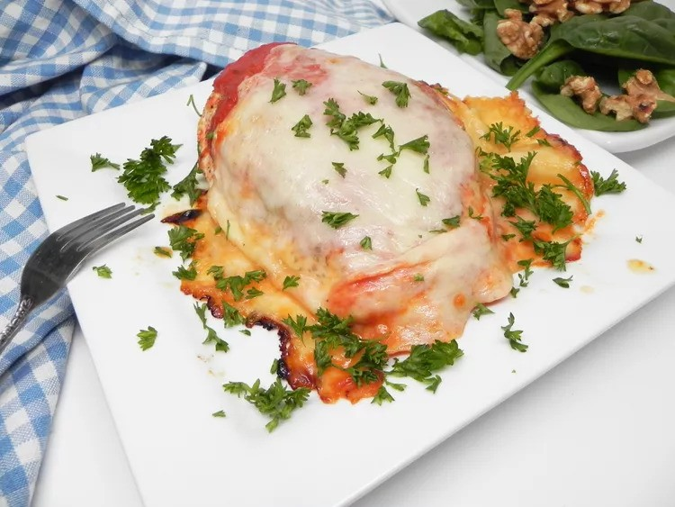

Easy Chicken Parm

This is an easy chicken Parm recipe that's delicious. You can do this in an oven or a toaster oven.
Ingredients
- cooking spray
- 1 (16 ounce) package skinless, boneless chicken breasts (such as Perdue®)
- 4 slices mozzarella cheese
- 2 cups tomato sauce, or to taste
Steps
- Preheat the oven to 375 degrees F (190 degrees C). Spray a baking pan with cooking spray.
Place chicken on the prepared pan.
- Bake in the preheated oven for 20 minutes, flipping chicken after 12 minutes.
Remove from the oven, add desired amount of sauce, and top each breast with mozzarella cheese.
- Bake until cheese is melted and chicken is no longer pink in the center and the juices run clear,
about 12 more minutes. An instant-read thermometer inserted into the center should read at least 165 degrees F (74 degrees C).